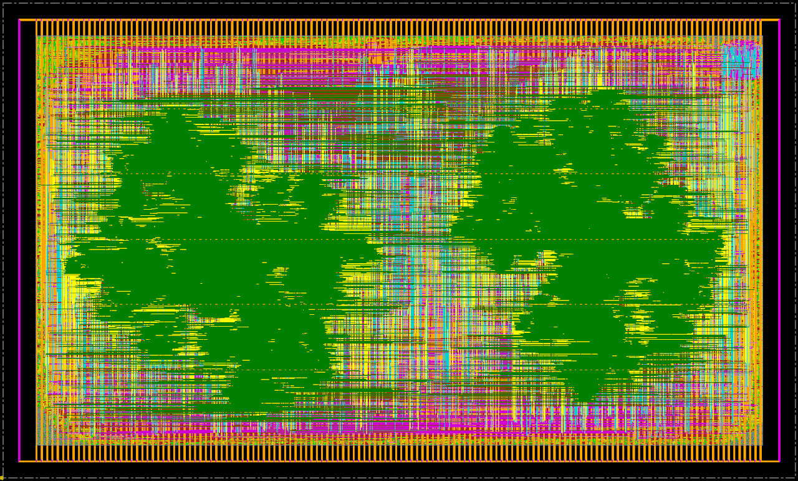
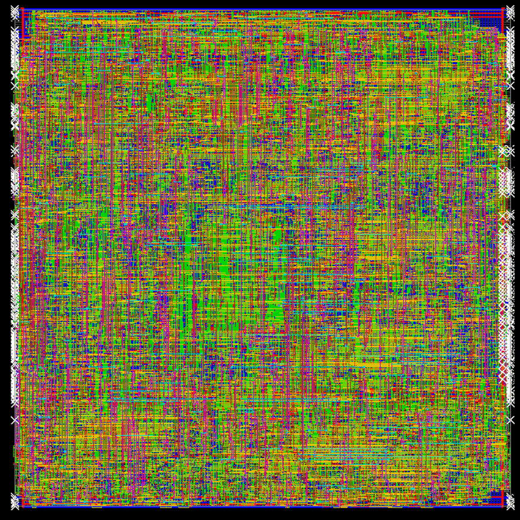
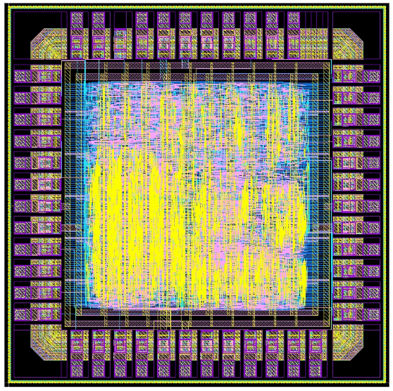
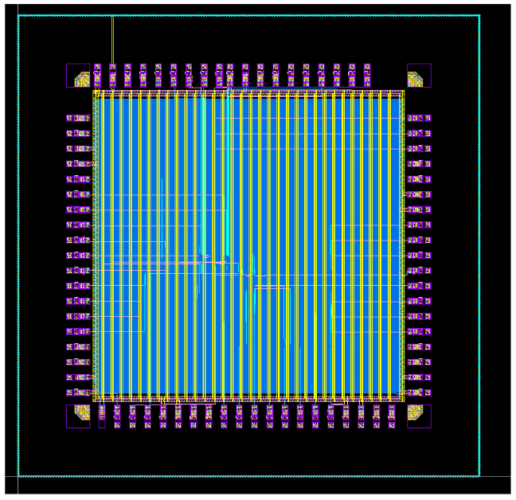
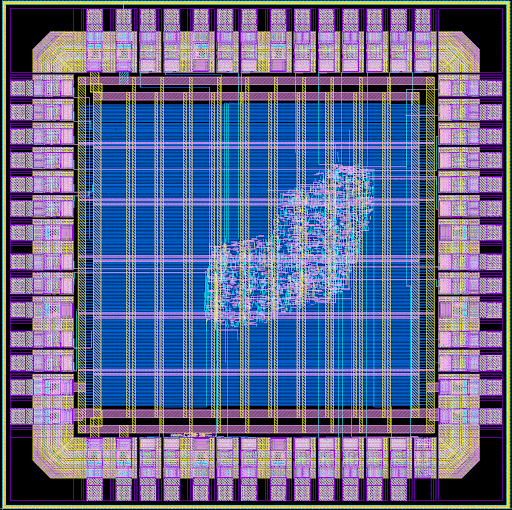

XR System Technology Architect
Qualcomm Technologies Inc., Bangalore
Bengaluru · India
Hello, I’m
XR System Technology Architect × Edge-AI Researcher
My research uses hardware–software co-design to profile workloads, explore precision, design compute primitives, and integrate resource-efficient accelerators and RISC-V–hosted SoCs.
01 · About
I am a doctoral researcher at the Nanoscale Devices, VLSI Circuit and System Design (NSDCS) Research Lab, Department of Electrical Engineering, Indian Institute of Technology Indore.
I joined Qualcomm Technologies Inc., Bangalore as an XR system technology architect in December 2025. My work is grounded in low-power reconfigurable computing, RISC-V-based SoC architecture, structured ASICs, and hardware–software codesign for domain-specific AI accelerators.
I have collaborated across several publications and actively review for IEEE TCAD, ESL, TVLSI, Elsevier JSA, ISCAS, APCCAS, and related venues.
Qualcomm Technologies Inc., Bangalore
NSDCS Research Lab, IIT Indore · thesis submitted Dec 2025
Intel Labs, Bengaluru
Aeronautical Development Agency · Tata Consultancy Services, Mumbai
SGGS Institute of Engineering & Technology, Nanded
02 · Research focus
I co-design number formats, compute fabrics, memory systems, and control to make edge intelligence more efficient.
Energy-aware accelerators for perception, on-device inference, and real-time intelligent systems.
Precision-adaptive SIMD engines, CORDIC datapaths, and workload-flexible neural processing.
SRAM and ReRAM digital CIM macros that reduce data movement for low-power AI.
Compact host processors, structured ASIC methodology, and end-to-end hardware–software codesign.
03 · Chip gallery
Implemented accelerator and processor designs across 28–180 nm technologies.

Intuitive intelligence SoC for autonomous driving
A dual-core RISC-V acceleration system with SIMD FP/Posit 4/8-bit precision for object detection, driver monitoring, traffic understanding, and scene perception.
Pedestrian detection reaches a 0.885 F1-score and 91.8% mAP at BOSE-8; vehicle classification reaches 90% accuracy. Driver monitoring reports 2.0 MAE for head position, 93.8% eye-position accuracy, and 88.7–91.2% driver behaviour/status accuracy. Traffic-sign recognition achieves 78.34% accuracy and 81% mAP; colour classification reaches 82.8% accuracy, 93.3% recall, and 96.5% precision. The system also reports 89.4% lane-detection accuracy, 91.6 mAP for depth estimation, and 6.4% estimation error for 3D scene analysis.

Transprecision neural processing unit
Unified SIMD MAC support for INT-4/8, FP-4/8, and Posit-8/16; a DA-VINCI activation engine; combined systolic and vector engines; and AXI integration with a RISC-V host.

Small-footprint, performance-accelerated RISC-V
A compact dual-issue RISC-V core with a configurable CORDIC MAC/dot-product datapath and L0 prefetch cache for AI-centric embedded workloads. It reaches an Embench score of 1.36 and 17.96 µW/MHz power efficiency.

Neural compute engine
An 8-bit dual multiply–accumulate unit and resource-shared nonlinear activation unit operating serially for resource-constrained IoT neural computation.

CORDIC execution engine
A Pareto-enhanced, pipelined 8/16-bit shift–add engine for MAC, sigmoid, tanh, softmax, and ReLU in low-power AI inference.
04 · Publications
Journals, conference papers, works in advanced revision, and patents—organised for quick scanning.
No publications match that search.
05 · Collaborations
Community & service
I served as Vice Chair of the IEEE CASS Student Branch Chapter at IIT Indore from December 2022 to December 2025 and continue to contribute as an active peer reviewer.
06 · Contact
Office hours are Monday to Friday, 10:30 AM–4:30 PM IST. Please email or request time for a short discussion.